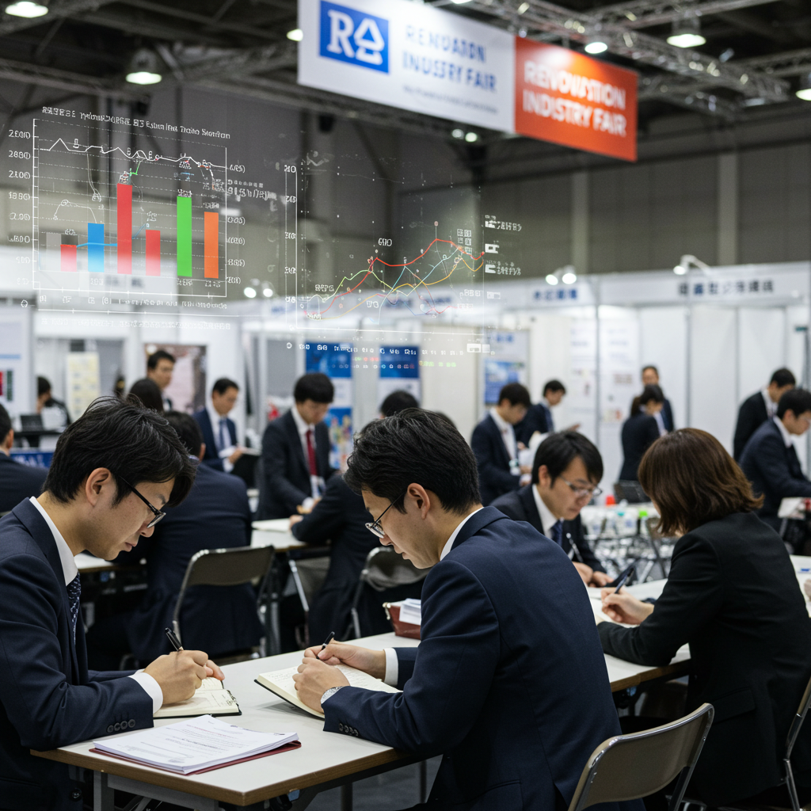
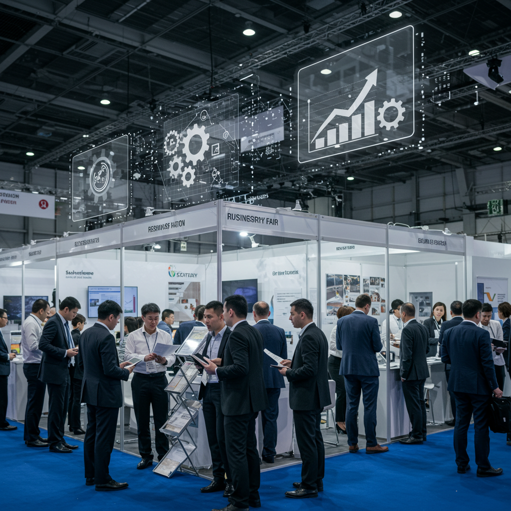
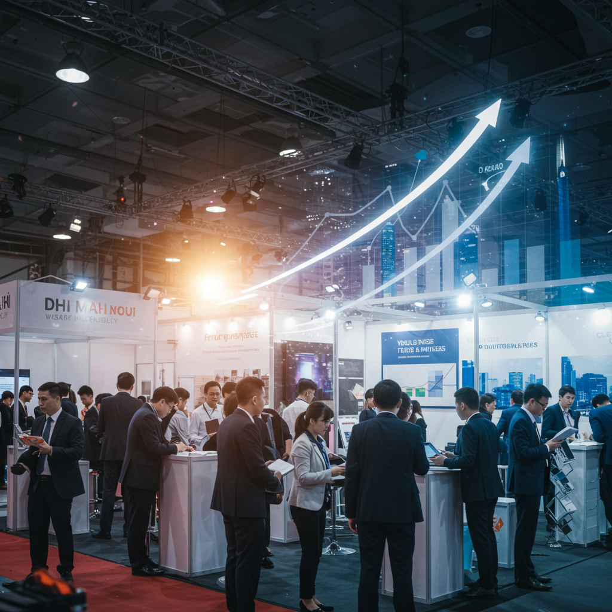

リフォーム産業フェア活用術！経営課題解決と成長戦略のヒント
導入
リフォーム業界に身を置く経営者の皆様、そして日々現場の最前線でご活躍されている皆様、こんにちは。日々の業務に追われる中で、ふとこんなことをお考えになることはないでしょうか。
- 「人手不足が深刻で、若手がなかなか育たない…」
- 「資材の価格は高騰するばかりで、利益を確保するのが年々難しくなっている」
- 「お客様のニーズは多様化しているのに、昔ながらの提案しかできていない気がする」
- 「DX化やIT活用が重要だとは聞くけれど、何から手をつけて良いのかさっぱりわからない」
- 「競合他社は増える一方で、自社の強みをどう打ち出していけばいいのだろうか…」
もし、一つでも心当たりがあるのであれば、それはあなただけが抱える悩みではありません。これらは、現代の日本が抱える構造的な課題を背景に、リフォーム業界全体が直面している、いわば共通の経営課題なのです。少子高齢化による労働人口の減少、ウッドショックや円安に端を発する資材高騰、インターネットの普及による顧客の情報収集能力の向上、そして、持続可能な社会への要請。変化の波は、待ったなしで私たちの足元に押し寄せています。
このような複雑で先の見えにくい時代において、事業を維持し、さらに成長させていくために最も重要なものは何でしょうか。それは、質の高い「情報」と、未来を共に創る「人との繋がり」に他なりません。変化の兆候をいち早く察知し、課題解決のヒントとなる最新の技術やサービスを知り、同じ志を持つ仲間と知恵を交換する。そうした能動的なアクションこそが、荒波を乗り越えるための羅針盤となり、力強い追い風となってくれるはずです。
しかし、多忙な日常の中で、これら質の高い情報や出会いを効率的に得ることは、決して簡単なことではありません。インターネットで検索すれば無数の情報が溢れていますが、その中から本当に自社にとって有益な情報を見つけ出すのは至難の業です。
そこで、皆様にご提案したいのが、年に一度開催される業界最大級のイベント、「リフォーム産業フェア」の活用です。
「展示会でしょう？昔行ったことがあるけれど、人が多くて疲れるだけだったよ」
「うちのような小さな会社が行っても、あまり意味がないんじゃないか」
そう思われる方もいらっしゃるかもしれません。ですが、近年のリフォーム産業フェアは、単なる新商品のお披露目の場から大きく進化を遂げています。それは、まさに先ほど挙げたような、リフォーム業界が抱えるあらゆる経営課題に対する「解決策の総合展示場」とでも言うべき、非常に価値の高いイベントへと変貌しているのです。
この記事では、そんなリフォーム産業フェアを「なんとなく」訪れるのではなく、明確な目的意識を持って戦略的に活用し、自社の経営課題解決と未来の成長戦略に繋げるための具体的な方法を、一つひとつ丁寧に、そして分かりやすく解説していきます。
この記事を読み終える頃には、リフォーム産業フェアがあなたにとって、単なる年に一度のお祭りではなく、未来を拓くための重要なビジネスチャンスの宝庫に見えてくるはずです。さあ、一緒に、あなたの会社の未来を創るためのヒントを探す旅に出かけましょう。
リフォーム産業フェアとは？経営者が見るべきポイント
まずは、リフォーム産業フェアがどのようなイベントなのか、その全体像を掴むことから始めましょう。漠然としたイメージではなく、その本質的な価値を理解することが、効果的な活用の第一歩となります。経営者という視点から、どこに注目し、何を得るべきなのかを考えていきます。
１．業界最大級イベントの概要と特徴
リフォーム産業フェアは、その名の通り、リフォーム業界に特化した日本最大級の専門展示会です。主催は、業界の動向を長年にわたり発信し続けている「リフォーム産業新聞社」。業界を知り尽くしたプロフェッショナルが企画・運営しているからこそ、出展内容やセミナーのテーマが、常に現場のニーズや経営者の悩みに寄り添ったものになっています。
毎年夏、多くのビジネスパーソンで賑わう東京ビッグサイトを会場に、2日間にわたって開催されます。その規模は年々拡大しており、数百社にのぼる企業が出展し、全国から数万人のリフォーム関連事業者が来場します。この数字だけでも、業界全体の期待と関心の高さがうかがえるでしょう。
このフェアの最大の特徴は、その「総合性」にあります。単に新しい建材や住宅設備が並んでいるだけの展示会ではありません。その領域は、リフォーム事業を構成するあらゆる要素を網羅しています。
例えば、
- 建材・設備ゾーン: キッチン、バス、トイレといった水まわり設備はもちろん、高機能な断熱材、デザイン性の高い内外装材、環境に配慮した塗料など、リフォームの品質と価値を直接的に向上させる製品が並びます。
- DX・ITソリューションゾーン: 見積もり作成ソフト、顧客管理システム（CRM）、施工管理アプリ、VR/ARを活用した提案ツールなど、深刻化する人手不足を補い、業務効率を劇的に改善するためのITツールが一堂に会します。
- マーケティング・集客ゾーン: ホームページ制作、SEO対策、Web広告運用、SNS活用コンサルティングなど、デジタル時代における新しい顧客獲得の手法を提案する企業が集まります。
- ビジネスサポートゾーン: 補助金申請サポート、人材育成プログラム、事業承継コンサルティング、FC加盟募集など、経営そのものを支えるサービスも充実しています。
これらが、ただ展示されているだけではないのが、リフォーム産業フェアのもう一つの大きな特徴です。各ブースでは、製品やサービスのデモンストレーションが活発に行われ、開発担当者や専門スタッフから直接、詳細な説明を聞くことができます。カタログやウェブサイトを眺めるだけでは決して得られない、製品の質感、操作性、そして「開発者の想い」といった生きた情報を五感で感じ取ることができるのです。
さらに、このフェアの価値を飛躍的に高めているのが、同時開催される数多くのセミナーや講演会です。業界のトップランナーである経営者、著名なコンサルタント、各分野の専門家が登壇し、成功事例や最新の業界動向、未来予測などを惜しみなく語ります。これらのセミナーは、日々の業務から少しだけ視点を引き上げ、自社の進むべき方向性を再確認するための、またとない機会となるでしょう。
つまり、リフォーム産業フェアは、製品・技術・ノウハウ・人脈といった、リフォーム事業の成長に必要なあらゆる要素が凝縮された「情報の交差点」なのです。この交差点に身を置くことで、自社の現在地を客観的に把握し、未来への道筋を描くための羅針盤を手に入れることができる。それが、このイベントが持つ本質的な価値と言えるでしょう。
２．ターゲット層と出展内容の全体像
リフォーム産業フェアがどのような人々を対象とし、どのような企業が出展しているのかを具体的に理解することは、自社がそこで何を得られるのかをイメージする上で非常に重要です。
来場者のターゲット層
このフェアに足を運ぶのは、リフォーム事業に携わるあらゆる立場の人々です。その中心となるのは、もちろんリフォーム会社や工務店の経営者、経営幹部の皆様です。彼らは、会社の未来を左右する新たなビジネスの種や、喫緊の経営課題を解決するソリューションを求めて、真剣な眼差しで会場を歩きます。
しかし、来場者は経営層だけではありません。
- 営業・プランナー担当者: お客様への提案の幅を広げるための新しい商材や、説得力を高めるためのデザイン・カラートレンドの情報を探しに来ます。
- 設計・施工管理担当者: 施工効率を高める新工法や、品質を向上させる新しい建材、現場管理を楽にするITツールなどを熱心に見て回ります。
- マーケティング・広報担当者: 効果的な集客方法やブランディング戦略のヒントを得るために、専門企業のブースやセミナーに足を運びます。
- 新規事業開発担当者: リフォーム事業とのシナジーが見込める新しい事業領域（例えば、不動産仲介、インスペクション、買取再販など）の情報を収集します。
さらには、リフォーム事業への参入を検討している異業種の企業（不動産会社、ガス・電力会社など）や、建築を学ぶ学生、独立を目指す職人など、その裾野は非常に広いのが特徴です。多様な目的を持った人々が集まるからこそ、会場全体が熱気に包まれ、新たな化学反応が生まれる土壌となっているのです。
出展内容の全体像
一方、出展する企業もまた多岐にわたります。その内容は、リフォームという事業を「川上」から「川下」まで、そして「ハード」から「ソフト」まで、あらゆる側面から支えるものとなっています。
- ハード（モノ）の提供者:
- 住宅設備メーカー: TOTO、LIXIL、パナソニックといった大手はもちろん、特定の機能やデザインに特化した中小メーカーも多数出展します。最新の節水トイレや、掃除のしやすいユニットバス、AI搭載のシステムキッチンなどを実際に見て触れることができます。
- 建材メーカー: 断熱材、サッシ、屋根材、外壁材、フローリング、壁紙など、建物の性能や意匠を決定づけるあらゆる建材が集まります。特に近年は、省エネ性能を高める製品や、自然素材、リサイクル素材といった環境配慮型の製品が注目を集めています。
- 工具・機械メーカー: 施工現場の生産性を向上させる電動工具や、計測機器、安全装備なども重要な展示分野です。
- ソフト（サービス・ノウハウ）の提供者:
- ソフトウェア開発会社: ここが近年のフェアで最も活気のあるエリアの一つです。見積もり・顧客管理・施工管理などを一元化する統合型システム、3DパースやVRで完成イメージをリアルに伝えるプレゼンテーションツール、ドローンや3Dスキャナーを活用した現場調査システムなど、リフォーム業務のDXを推進するソリューションが数多く展示されています。
- マーケティング支援会社: ホームページ制作やSEO/MEO対策、Web広告運用代行、InstagramやYouTubeなどのSNS活用支援、さらにはチラシやイベントといったオフライン集客のノウハウまで、顧客獲得に関するあらゆる悩みに応える専門家が集結します。
- コンサルティング・FC本部: 経営戦略の立案、人材育成、組織開発などを支援するコンサルティング会社や、成功モデルをパッケージで提供するフランチャイズ本部も出展しており、経営の根幹に関わる相談ができます。
- その他専門サービス: 瑕疵保険やリフォームローン、補助金申請代行、産業廃棄物処理、職人マッチングサービスなど、事業運営に欠かせない様々な周辺サービスも網羅されています。
このように、リフォーム産業フェアは、リフォーム事業に関わる「プレイヤー」が勢揃いする、年に一度のプラットフォームです。自社の事業フェーズや抱える課題に応じて、必ずや有益な情報や出会いが見つかるはずです。経営者としては、これらの多様な出展内容を俯瞰的に捉え、「自社に今、足りないピースは何か」「未来の成長のために、どの分野の情報を重点的に収集すべきか」という戦略的な視点を持つことが、フェアを最大限に活用する鍵となります。
３．なぜ今、リフォーム経営者が注目すべきか
業界最大級のイベントであることは分かりました。では、なぜ「今」、リフォーム会社の経営者は、多忙な時間を割いてまで、このフェアに足を運ぶべきなのでしょうか。その理由は、リフォーム業界を取り巻く環境が、かつてないほどの大きな変革期を迎えているからです。そして、その変革の波を乗りこなし、未来を掴むためのヒントが、このフェアには凝縮されているからです。
理由１：待ったなしの「DX化」への対応
「DX（デジタルトランスフォーメーション）」という言葉を聞かない日はないほどですが、建設・リフォーム業界は、他産業に比べてその取り組みが遅れていると指摘されています。しかし、もはや「よくわからないから」と先送りにできる状況ではありません。深刻化する人手不足と職人の高齢化という構造的な課題を乗り越えるためには、ITの力を活用した業務効率化は避けて通れない道です。
- 手書きの見積書やFAXでのやり取りに、貴重な時間を奪われていませんか？
- 担当者の頭の中にしか情報がなく、急な休みや退職で現場が混乱した経験はありませんか？
- お客様との打ち合わせ履歴が共有されず、言った言わないのトラブルになったことはありませんか？
これらの「あるある」な悩みは、適切なITツールを導入することで、その多くが解決可能です。リフォーム産業フェアには、まさにこうした現場の課題を解決するために開発された、多種多様なソフトウェアやアプリケーションが集結します。複数のサービスをその場で比較検討し、開発者から直接、導入のメリットや費用対効果について話を聞ける機会は、他にはありません。「DX化の第一歩をどこから踏み出せばいいかわからない」と悩む経営者にとって、具体的な道筋を見つけるための絶好の機会となるのです。
理由２：顧客ニーズの多様化と高度化
現代の消費者は、インターネットやSNSを通じて、豊富な情報に簡単にアクセスできます。リフォームに関しても、デザインのトレンド、新しい建材の性能、適正な価格帯など、非常に多くの知識を持った上で相談に来られるケースが増えています。もはや、「言われたものをただ交換する」だけの工事では、顧客満足を得ることは難しくなっています。
- デザイン性へのこだわり: Instagramなどで海外のインテリア事例を目にする機会が増え、より洗練された空間デザインを求める声が大きくなっています。
- 性能への要求: 地震や台風などの自然災害への備えとしての耐震・制震性能、健康で快適な暮らしを実現するための断熱・気密性能、光熱費を削減するための省エネ性能など、目に見えない価値への関心が高まっています。
- 持続可能性への意識: SDGsへの関心の高まりから、環境に配慮した建材や、長く大切に使えるリフォームを望む顧客層も出現しています。
リフォーム産業フェアでは、こうした多様化・高度化する顧客ニーズに応えるための新しい商材や提案手法が数多く紹介されます。デザイン性の高いタイルや壁紙、驚くほど高性能な断熱材、太陽光発電と蓄電池を組み合わせたエネルギー自給自足の提案など、自社の提案の引き出しを増やし、顧客単価の向上にも繋がるヒントが満載です。
理由３：「ストック型社会」への本格的な移行
新築住宅の着工戸数が減少傾向にある一方で、日本の住宅ストック（既存住宅）は約6,240万戸にのぼり、そのうち約849万戸が空き家であると言われています（2018年時点）。国も「作っては壊す」スクラップ＆ビルドの社会から、良質な住宅ストックを長く大切に使う「ストック型社会」への転換を推進しています。
この大きな流れは、リフォーム業界にとって追い風であると同時に、事業モデルの変革を迫るものでもあります。これからは、単発の工事で終わるのではなく、住宅の価値を維持・向上させるための長期的なパートナーとして、お客様と寄り添っていく視点が不可欠になります。
リフォーム産業フェアでは、このストック活用ビジネスに関連する展示やセミナーも年々充実しています。
- インスペクション（住宅診断）: 中古住宅の売買前に建物の状態を診断するサービスや、そのための機材・資格。
- 買取再販事業: 中古物件を買い取り、リノベーションを施して再販するビジネスモデルのノウハウ。
- 長期優良住宅化リフォーム: 国の補助金制度を活用し、住宅の性能を向上させるリフォーム提案。
これらの新しい事業領域への展開は、会社の新たな収益の柱を築き、持続的な成長を実現するための重要な戦略となります。フェアは、その具体的な第一歩を踏み出すための情報収集の場として、非常に有効なのです。
このように、リフォーム産業フェアは、単なる商材探しの場ではありません。業界が直面する大きな変化の潮流を肌で感じ、自社の経営課題と向き合い、未来への航路を描くための「戦略的な情報収集の場」として、今こそ全ての経営者が注目すべきイベントなのです。
リフォーム産業フェア参加のメリット
リフォーム産業フェアがどのようなイベントか、そしてなぜ今注目すべきかをご理解いただけたところで、次に、実際に参加することで得られる具体的なメリットについて、さらに詳しく見ていきましょう。これらのメリットを意識して会場を回ることで、参加の価値を何倍にも高めることができます。
メリット１．最新トレンドと技術情報の効率的な収集
リフォーム会社の経営者や担当者の皆様は、日々の業務の中で、常に新しい情報にアンテナを張ることの重要性を感じていらっしゃると思います。しかし、現実には、お客様との打ち合わせ、現場の管理、見積もりの作成、スタッフのマネジメントなど、目の前のタスクに追われ、体系的な情報収集に時間を割くのは難しいのではないでしょうか。
インターネットで検索すれば、確かに多くの情報は見つかります。しかし、その情報は断片的であったり、広告的な意図が強く信憑性に欠けたりすることも少なくありません。また、ウェブサイトやカタログの文字情報だけでは、製品の本当の質感や色味、使い勝手といった、お客様に提案する上で最も重要な「リアルな感覚」は伝わってきません。
リフォーム産業フェアに参加する最大のメリットの一つは、この「情報収集の非効率」を解消できる点にあります。たった1日か2日、会場に足を運ぶだけで、業界の最新トレンドと技術情報を、網羅的かつ効率的に、そして何よりも「五感で」収集することができるのです。
「見る・触る・聞く」ことの価値
例えば、新しいフローリング材を探しているとします。ウェブサイトでは「木の温もりを感じる無垢材」と書かれていても、その樹種による硬さの違い、表面の仕上げによる肌触りの違い、光の当たり方による色味の変化までは分かりません。フェアの会場では、実際にサンプルを手に取り、素足で踏みしめ、メーカーの担当者からその素材が持つストーリーやメンテナンス方法について詳しく聞くことができます。この「生きた情報」こそが、お客様の心に響く説得力のある提案に繋がるのです。
同様に、最新のシステムキッチンであれば、収納の引き出しを実際に開け閉めしてそのスムーズさを確かめたり、最新のコンロの安全機能をデモンストレーションで見せてもらったりすることができます。施工管理アプリであれば、自分のスマートフォンでデモ版を操作させてもらい、直感的に使えるかどうかを試すことも可能です。
業界の「今」と「未来」を体感する
会場を歩いていると、各メーカーが今、どのような製品に力を入れているのか、業界全体がどのような方向に向かっているのかが、肌感覚で分かってきます。
- 「今年はどのブースでも『ZEH（ゼッチ）』や『省エネ』というキーワードが目立つな。やはり国策とも連動して、高断熱・高気密化の流れは加速しているようだ」
- 「デザイン性の高い建材が増えているけれど、特にグレイッシュなトーンや自然素材を模したリアルな質感がトレンドのようだ。次の提案に取り入れてみよう」
- 「職人不足を背景に、施工を簡略化できる『乾式工法』の製品が増えている。これは工期短縮とコスト削減に直結するかもしれない」
このように、個別の製品情報だけでなく、業界全体の大きな潮流、つまり「トレンド」を掴むことができるのが、フェアの大きな価値です。このトレンド感覚は、日々の業務だけではなかなか養うことができません。年に一度、この場所に身を置くことで、自社の事業が世の中の流れからずれていないかを確認し、軌道修正を図るための貴重な定点観測の機会となるのです。
複数のメーカーの製品をその場で比較検討できるのも、効率的な情報収集という点で非常に重要です。A社の製品とB社の製品、カタログスペックは似ていても、細かな仕様や価格、保証内容、担当者の対応など、実際に比較してみることで見えてくる違いはたくさんあります。複数のショールームを何日もかけて回る手間を考えれば、その時間的コストの削減効果は計り知れません。
リフォーム産業フェアは、いわば業界の最新情報が凝縮された「生きた図書館」です。この図書館を歩き回り、興味のある本（ブース）を手に取り、著者（担当者）と直接対話することで、あなたの知識と提案力は飛躍的に向上するはずです。
メリット２．DX化・新規事業の具体的なヒント発見
多くの経営者が「必要性は分かっているけれど、何から手をつけて良いか分からない」と感じているのが、「DX化」と「新規事業の開発」ではないでしょうか。これらは、会社の未来を創る上で極めて重要なテーマでありながら、日々のオペレーションとは異なる思考や知識が求められるため、後回しにされがちです。
リフォーム産業フェアは、こうした漠然とした課題意識に、具体的な「解」を与えてくれる場所です。抽象的な概念だったDX化や新規事業が、目の前にある製品やサービス、そして成功事例に触れることで、リアルな「自社ごと」として捉えられるようになります。
DX化の「最初の一歩」が見つかる
DX化と聞くと、何か大規模なシステムを導入し、業務全体を根底から変えなければならない、といった壮大なイメージを抱いてしまうかもしれません。しかし、実際には、もっと身近な課題解決から始めることができます。リフォーム産業フェアのDX・IT関連ゾーンは、まさにそのためのヒントの宝庫です。
- 「顧客情報が営業担当者ごとにバラバラに管理されていて、会社全体の資産になっていない」
→ そんな課題には、顧客情報や商談履歴を一元管理できるCRM（顧客関係管理）ツールのブースを訪れてみましょう。月額数千円から始められるクラウドサービスも多く、導入のハードルは決して高くありません。デモを見ながら、「自社の営業フローに合うか」「スタッフが使いこなせそうか」といった視点で比較検討できます。 - 「見積もり作成に時間がかかりすぎている。特に新人だと精度も低い」
→ 見積もり作成ソフトのブースでは、過去のデータから自動で原価を算出したり、ボタン一つで体裁の整った見積書を作成したりする様子を目の当たりにできます。これにより、ベテランでなくても精度の高い見積もりを迅速に作成できるようになり、業務の標準化と効率化が図れます。 - 「現場監督が事務所に戻らないと報告書が作れず、残業の原因になっている」
→ 施工管理アプリのブースを覗いてみてください。スマートフォンで撮った現場写真をそのまま報告書に添付し、関係者全員にリアルタイムで共有できる。そんな未来のような光景が、すでに現実のソリューションとして提供されています。これにより、移動時間や事務作業が大幅に削減され、働き方改革にも繋がります。
このように、自社が抱える具体的な課題を一つ持って会場を訪れることで、「DX化」という漠然としたテーマが、「このツールを導入すれば、あの問題を解決できるかもしれない」という具体的なアクションプランへと変わっていくのです。
新規事業の「種」を発見する
既存のリフォーム事業が安定していても、5年後、10年後を見据えたとき、新たな収益の柱を育てていくことは、企業が持続的に成長するために不可欠です。リフォーム産業フェアは、その「種」を見つけるための絶好の機会を提供してくれます。
会場には、リフォーム事業と親和性の高い、様々な新規事業のヒントが散りばめられています。
- 不動産仲介との連携: 中古住宅の購入者にリノベーションをセットで提案する「ワンストップサービス」は、顧客にとっての利便性が高く、大きなビジネスチャンスです。フェアには、不動産会社とのマッチングを支援するサービスや、ワンストップ事業のノウハウを提供する企業のブースがあります。
- インスペクション（住宅診断）事業: 建物の専門家であるリフォーム会社が、中古住宅の劣化状況を診断するサービスは、信頼性が高く、新たな収益源となり得ます。インスペクションに必要な機材や資格取得に関する情報を得ることができます。
- 空き家活用ビジネス: 社会問題化している空き家を、賃貸住宅や民泊、シェアハウスなどにリノベーションして活用する事業も注目されています。そうした事業の成功事例を紹介するセミナーや、専門のコンサルティング会社のブースがヒントをくれるでしょう。
- エネルギー関連事業: ZEHやLCCM住宅への関心の高まりを受け、太陽光発電システムや蓄電池、HEMS（ホームエネルギーマネジメントシステム）の販売・施工も有望な事業領域です。最新の製品情報や販売代理店募集の情報を得ることができます。
これらの情報は、普段の業務の中ではなかなか出会うことができません。フェアという非日常の空間で、多様なビジネスモデルに触れることで、自社の強み（例えば、設計力、施工管理能力、地域での信頼など）を活かせる新たな事業領域が見えてくるはずです。それは、会社の未来を切り拓く、大きな一歩となるかもしれません。
メリット３．業務効率化・顧客獲得ソリューションとの出会い
リフォーム事業における経営者の悩みは、突き詰めると「いかに生産性を上げ、利益を確保するか」そして「いかにして継続的に顧客を獲得し、売上を伸ばすか」という二つの大きなテーマに集約されると言っても過言ではありません。リフォーム産業フェアは、この二大課題に対する直接的な解決策、すなわち「ソリューション」と出会える場所です。
人手不足を乗り越える「業務効率化」ソリューション
建設業界全体が抱える最も深刻な課題が人手不足です。少ない人数で、いかにして多くの仕事を、高い品質を保ちながらこなしていくか。その答えは、テクノロジーの活用による業務効率化にあります。
フェアの会場では、リフォーム業務の各プロセスを効率化するための、驚くようなツールやサービスに出会うことができます。
- 【現調・プランニング段階】
- 3Dスキャナー/レーザー距離計: これまで二人一組でメジャーを使って行っていた採寸作業が、一人で、しかも短時間で、ミリ単位の精度で完了します。取得した3Dデータは、そのままCADソフトに取り込んで図面作成に活用でき、設計時間を大幅に短縮します。
- ドローン: 高所にある屋根や外壁の劣化状況の確認に、足場を組む必要がなくなります。お客様にもリアルタイムで映像を見せながら説明できるため、説得力が増し、受注に繋がりやすくなります。安全性の向上と調査コストの削減に大きく貢献します。
- 【提案・商談段階】
- VR/ARプレゼンテーションツール: 図面やパースだけでは伝わりにくいリフォーム後の空間を、VRゴーグルを使って仮想現実として体験してもらったり、AR（拡張現実）技術で実際の部屋に新しいキッチンのCGを重ねて表示したりできます。これにより、お客様は完成イメージを直感的に理解でき、意思決定がスムーズになります。契約率の向上に直結する強力な武器です。
- オンライン相談ツール: 遠方のお客様や、日中忙しくてショールームに来られないお客様とも、オンラインで顔を見ながら打ち合わせができます。画面共有機能を使えば、資料や写真を見せながら具体的な話を進めることができ、商談の機会損失を防ぎます。
- 【施工・管理段階】
- 施工管理アプリ/グループウェア: 現場の進捗状況、職人への指示、図面の共有などを、関係者全員がスマートフォンでリアルタイムに確認できます。これにより、「言った言わない」の伝達ミスを防ぎ、現場監督の移動時間や事務作業を削減します。
これらのソリューションは、単に「便利になる」というだけではありません。業務を効率化し、生み出された時間を、プランニングやお客様とのコミュニケーションといった、より付加価値の高い業務に振り分けることを可能にします。それは、顧客満足度の向上と、社員の働きがい向上にも繋がる、重要な経営改革なのです。
競争を勝ち抜く「顧客獲得」ソリューション
インターネットの普及により、お客様はリフォーム会社を簡単に見つけ、比較検討できるようになりました。数ある競合の中から自社を選んでもらうためには、戦略的なマーケティング活動が不可欠です。
リフォーム産業フェアには、現代の顧客獲得競争を勝ち抜くための、様々なソリューションを提供する専門家が集まっています。
- Webマーケティング:
- 「ホームページはあるけれど、全く問い合わせがない」という悩みには、SEO（検索エンジン最適化）やMEO（マップエンジン最適化）の専門家が相談に乗ってくれます。自社の商圏で「地域名＋リフォーム」と検索された際に、上位に表示されるための具体的なノウハウを学ぶことができます。
- 施工事例のブログ記事やお客様の声といった「コンテンツマーケティング」の手法や、効果的なWeb広告の運用方法など、自社の魅力を潜在顧客に届けるための具体的な手法が見つかります。
- SNS活用:
- 特にデザイン性の高いリフォームを手がけている会社であれば、Instagramの活用は非常に有効です。美しい施工事例の写真を投稿し、ファンを増やすことで、ブランディングと集客を同時に実現する方法を、専門のコンサルタントから学ぶことができます。
- YouTubeで、リフォームのポイントを解説する動画や、職人の技術を紹介する動画を配信し、会社の信頼性を高めている事例も増えています。動画制作やチャンネル運用の支援サービスもあります。
- 顧客管理と追客:
- 一度問い合わせがあったものの失注してしまったお客様や、過去に工事をさせていただいたOB顧客の情報を、ただ眠らせていませんか？CRMツールを活用し、定期的にメールマガジンを送ったり、リフォームの適切な時期にお知らせをしたりすることで、再度の受注に繋げる「追客」の仕組みを構築できます。
これらのソリューションは、もはや一部の先進的な企業だけのものではありません。自社の規模やターゲット顧客に合わせて、最適な手法を選択し、実行することが求められています。フェアの会場で専門家の話を聞き、成功事例に触れることで、自社に合った顧客獲得の新たな戦略を描くことができるでしょう。
メリット４．業界キーパーソンとの交流機会
ビジネスは、突き詰めれば「人と人との繋がり」によって成り立っています。どれだけ優れた製品や技術があっても、それを動かし、価値を創造するのは「人」です。リフォーム産業フェアは、製品や情報だけでなく、この最も重要な「人との繋がり」を得るための、またとない機会を提供してくれます。
インターネットやSNSが発達した現代でも、顔と顔を合わせて直接対話することの価値は、決してなくなりません。むしろ、デジタルなコミュニケーションが当たり前になったからこそ、リアルな場で交わされる言葉の重みや、そこから生まれる信頼関係は、より一層重要になっていると言えるでしょう。
同業者との情報交換とネットワーク構築
リフォーム会社の経営者は、孤独な決断を迫られる場面が多いものです。社員には言えない資金繰りの悩み、競合との厳しい価格競争、人材育成の難しさ。こうした悩みを分かち合い、相談できる相手は、案外少ないのではないでしょうか。
リフォーム産業フェアの会場には、あなたと同じように、様々な課題を抱えながらも、会社の未来のために奮闘している全国の同業者が集まっています。セミナーの合間の休憩時間や、少し空いたブースの前で、ふと隣に立った人と交わした何気ない会話が、思わぬヒントに繋がることがあります。
- 「最近、〇〇という材料の納期が遅れがちじゃないですか？うちは△△というルートで確保していますよ」
- 「若手の職人さんの定着率を上げるために、どんな工夫をされていますか？」
- 「新しい補助金、申請が複雑で困っているんですが、どうされていますか？」
こうした現場レベルの情報交換は、非常に価値があります。また、異なる地域で事業を展開している経営者と話すことで、地域性の違いや、自分たちの商圏ではまだ顕在化していない新しいトレンドを知ることもできます。ここで生まれた繋がりが、後々、共同で資材を仕入れたり、お互いの繁忙期に職人を融通し合ったりといった、具体的な協力関係に発展する可能性も秘めています。こうした横の繋がりは、会社の経営にとって大きな財産となるはずです。
メーカー・サプライヤーとの関係深化
普段、電話やメールでやり取りしている建材メーカーやITベンダーの担当者と、直接会って話ができるのも、フェアの大きなメリットです。日頃の感謝を伝えたり、製品に対する改善要望を直接伝えたりすることで、より強固な信頼関係を築くことができます。
また、普段は接点のない、開発部門の責任者や経営層といったキーパーソンと名刺交換ができるチャンスもあります。彼らから製品開発の背景にある思想や、会社の今後のビジョンを聞くことで、その企業や製品に対する理解が深まります。こうした深いレベルでの関係性は、将来的に価格交渉や納期の調整、新製品の先行情報の入手といった場面で、有利に働くことも少なくありません。
業界のトップランナーからの直接的な学び
フェアの魅力の一つであるセミナーでは、業界を牽引する企業の経営者や、著名なコンサルタントが講師として登壇します。セミナー終了後、勇気を出して講師に名刺交換をお願いし、一言二言でも直接会話を交わすことができれば、それは非常に貴重な体験となります。
彼らがどのような視点で業界を見て、どのような戦略で成功を収めてきたのか。その思考の片鱗に直接触れることは、本を何冊読むよりも大きな刺激とインスピレーションを与えてくれるでしょう。その場で具体的な経営相談をすることは難しくても、顔を覚えてもらうだけでも、将来的な繋がりが生まれるきっかけになるかもしれません。
このように、リフォーム産業フェアは、意図的に行動すれば、自社のビジネスを豊かにする様々な「人脈」を構築できる場です。少しの勇気と積極性が、会社の未来を大きく変える出会いを引き寄せるかもしれません。名刺は多めに、そして、自社の事業内容やビジョンを簡潔に語れる準備をして、臨むことをお勧めします。
リフォーム産業フェアで得られる情報と展示
リフォーム産業フェアが、単なる製品展示会ではなく、経営課題解決のヒントが詰まった情報の宝庫であることは、すでにお伝えした通りです。ここでは、具体的にどのようなテーマの情報や展示があり、それらがどのように自社の事業成長に繋がるのかを、さらに掘り下げて見ていきましょう。
１．DX・IT活用で変わるリフォーム業務
近年のリフォーム産業フェアで、最も大きな面積を占め、最も多くの来場者の関心を集めているのが、間違いなくこの「DX・IT活用」の分野です。かつては「紙・電話・FAX」が主役だったリフォーム業界の業務フローが、テクノロジーの力でいかに劇的に変化しつつあるのかを、会場ではっきりと体感することができます。
この分野の展示は、リフォーム業務の流れに沿って、様々な課題を解決するソリューションで構成されています。
【集客・マーケティング段階】
- MA（マーケティングオートメーション）ツール: ホームページからの問い合わせ客や、過去のイベント参加者など、見込み顧客の情報を一元管理し、それぞれの興味関心度合いに応じて、メールマガジンの配信や営業アプローチを自動化するツールです。営業担当者の勘や経験に頼るだけでなく、データに基づいた効率的な追客を実現します。
- Web接客ツール: ホームページを訪れたお客様に対し、チャットボットが自動で対応したり、適切なタイミングで有人チャットへ誘導したりするツールです。お客様の疑問をその場で解決し、離脱を防ぎ、問い合わせへと繋げる確率を高めます。
【営業・提案段階】
- CRM/SFA（顧客関係管理/営業支援）システム: 顧客情報、商談の進捗状況、見積もり履歴、過去の工事内容などを一元的に管理する、いわば「会社の情報資産の心臓部」です。担当者が変わってもスムーズな引き継ぎが可能になり、会社全体で顧客をフォローする体制を築けます。また、営業活動のデータが蓄積されることで、失注原因の分析や、成功パターンの共有も容易になります。
- 高機能な見積もり・原価管理ソフト: 複雑なリフォーム工事の見積もりを、部材の拾い出しから原価計算、利益計算まで、スピーディーかつ正確に行えるソフトです。過去の見積もりデータを活用したり、最新の建材価格データベースと連携したりする機能もあります。これにより、見積もり作成時間を大幅に短縮し、どんぶり勘定からの脱却と、適正な利益確保を実現します。
- プレゼンテーション支援ツール（VR/AR/3Dパース）: お客様が最も気にされる「リフォーム後のイメージ」を、リアルに可視化するツールです。3Dパース作成ソフトは、もはや専門家でなくても直感的に操作できるものが増えています。VRゴーグルをかければ、まるでリフォーム後の部屋の中を歩いているかのような体験を提供でき、お客様の期待感を最大限に高めます。
【施工・アフターフォロー段階】
- 施工管理（プロジェクト管理）アプリ: 現場の写真、図面、工程表、職人とのやり取りなどを、スマートフォンやタブレット上で一元管理するアプリです。関係者全員が常に最新の情報を共有できるため、伝達ミスや手戻りを劇的に減らすことができます。現場監督は、移動中の隙間時間でも報告書の作成や指示出しが可能になり、生産性が飛躍的に向上します。
- アフターフォロー管理システム: 工事完了後のお客様情報を管理し、定期点検の時期を自動でお知らせしたり、保証書の情報をデータで管理したりするシステムです。きめ細やかなアフターフォローは、顧客満足度を高め、次のリフォームや知人の紹介に繋がる重要な活動です。この活動を仕組み化し、漏れなく実行することを支援します。
これらのITツールを導入する際に経営者が最も懸念するのは、「うちの社員は使いこなせるだろうか」「導入コストに見合う効果があるのだろうか」という点でしょう。リフォーム産業フェアのブースでは、そうした不安に対して、専門のスタッフが丁寧に答えてくれます。多くのブースで、実際の操作画面を見ながらのデモンストレーションが行われており、自社の業務にフィットするかどうかを直感的に判断できます。また、導入企業の成功事例や、費用対効果のシミュレーションなども具体的に示してくれるため、社内を説得するための材料も得られます。
DX・IT活用は、もはや避けては通れない経営課題です。フェアで最新のソリューションに触れることは、自社の業務プロセスの非効率な点に気づき、未来に向けた変革の第一歩を踏み出すための、最高のきっかけとなるでしょう。
２．新しい顧客層を開拓するマーケティング
人口減少社会に突入した日本では、これまでと同じやり方で、同じ顧客層だけをターゲットにしていては、事業の成長はおろか、維持さえも難しくなっていきます。会社の未来を築くためには、これまでアプローチできていなかった「新しい顧客層」を開拓していく視点が不可欠です。リフォーム産業フェアは、そのためのマーケティング戦略のヒントに満ちています。
会場では、様々な切り口で新しい顧客層へのアプローチを提案する企業やセミナーに出会うことができます。
【ターゲット層別マーケティング】
- 若年層（20代～30代）へのアプローチ:
- SNSマーケティング: 中古マンションを購入して自分らしくリノベーションしたいと考える若年層にとって、情報収集のメインツールはInstagramやPinterest、YouTubeです。美しい施工事例の写真や、リノベーションの過程を追った動画コンテンツは、彼らの感性に強く訴えかけます。「いいね！」や「フォロー」から始まり、将来の顧客へと育てる長期的なブランディング戦略のノウハウを学ぶことができます。
- オンライン完結型のサービス: ショールームに行く時間がない、対面での営業は少し苦手、と感じる若年層向けに、オンラインでの相談からプランニング、契約までをスムーズに行える仕組みづくりも重要です。そのためのビデオ通話ツールや電子契約サービスの展示もあります。
- アクティブシニア層へのアプローチ:
- 終の棲家としてのリフォーム提案: 子育てが終わり、夫婦二人の生活を楽しむためのリフォーム（減築、趣味の部屋づくり、ホームエレベーター設置など）や、将来の健康不安に備えるためのリフォーム（バリアフリー化、ヒートショック対策の断熱改修など）は、大きな潜在市場です。こうした提案のポイントや、シニア層に響く広告媒体（新聞折り込み、地域情報誌、カルチャーセンターでのセミナーなど）の活用法を紹介するブースがあります。
- 相続・資産活用と絡めた提案: 実家のリフォームや、相続した空き家の活用など、資産に関する悩みとリフォームを結びつけた提案も有効です。税理士やファイナンシャルプランナーと連携した相談会の開催など、新たなビジネスモデルのヒントが得られます。
【テーマ別マーケティング】
- ペット共生リフォーム: ペットを家族の一員と考える人が増え、ペットのためのリフォーム市場が拡大しています。滑りにくい床材、傷や汚れに強い壁紙、キャットウォークの造作など、専門的な知識と提案力が求められます。ペットリフォームに特化した建材メーカーや、成功事例を紹介するセミナーは必見です。
- サステナブル・エコリフォーム: 環境問題への関心が高い層に向けて、省エネ性能の向上（断熱、太陽光発電）はもちろん、国産材やリサイクル建材の使用、ゴミの排出を抑える工法などをアピールすることも有効な差別化戦略です。こうした取り組みを企業ブランディングに繋げる方法を学ぶことができます。
- DIY支援・セルフリノベーション: 自分の手で住まいづくりに参加したいというニーズも高まっています。プロが難しい部分だけを施工し、壁塗りや棚の取り付けなどはお客様自身が行う「DIY支援型リフォーム」という新しいサービスモデルも考えられます。そのためのツールや材料、ノウハウを提供するブースもあります。
これらの新しいマーケティングの切り口は、自社の強みや理念と掛け合わせることで、独自の魅力を生み出します。例えば、「デザイン力に自信があるなら、若年層向けのリノベーションに特化する」「地域密着で信頼が厚いなら、シニア層の暮らしに寄り添う提案を強化する」といった戦略です。
リフォーム産業フェアは、自社の進むべき方向性、つまり「誰に、何を、どのように届けるのか」というマーケティングの根幹を再定義するための、アイデアの宝庫なのです。
３．持続可能なリフォーム事業を築く新技術
「持続可能性（サステナビリティ）」は、もはや環境問題に関心のある一部の人々だけのものではなく、あらゆる企業活動において考慮すべき重要な経営指標となっています。リフォーム業界においても、この流れは例外ではありません。お客様の意識の変化、国による省エネ基準の強化や補助金制度の拡充など、持続可能性を追求することは、社会的責任を果たすと同時に、新たなビジネスチャンスを掴むことにも繋がります。
リフォーム産業フェアでは、この「持続可能性」をテーマにした、未来志向の新しい技術や建材に数多く出会うことができます。
【省エネルギー・創エネルギー技術】
- 高性能断熱材・サッシ: 住宅の断熱性能は、快適な室温を保ち、冷暖房にかかるエネルギー消費を抑えるための最も基本的な要素です。フェアでは、従来のグラスウールやロックウールに加え、より薄くても高い断熱性能を発揮するフェノールフォームや、自然素材であるセルロースファイバー、調湿効果も期待できる木質繊維系の断熱材など、多様な選択肢が展示されています。また、窓からの熱の出入りを防ぐ「トリプルガラス樹脂サッシ」や「真空ガラス」などの最新技術も、その性能を体感できる形で紹介されています。これらの技術は、お客様の光熱費削減という直接的なメリットに繋がるため、非常に提案しやすい商材です。
- 太陽光発電システム・蓄電池: エネルギーを「消費する」だけでなく「創り出す」ZEH（ネット・ゼロ・エネルギー・ハウス）化リフォームは、国の強力な後押しもあり、今後ますます需要が高まります。フェアでは、デザイン性の高い屋根一体型の太陽光パネルや、コンパクトで設置しやすい家庭用蓄電池などが展示されています。災害時の非常用電源としても活用できるため、防災意識の高まりも追い風となっています。補助金制度に詳しいメーカー担当者から、具体的な提案方法を学ぶこともできます。
- 高効率給湯器・HEMS: 家庭のエネルギー消費の多くを占める給湯。エコキュートやエコジョーズといった高効率給湯器の最新モデルは、さらなる省エネ性能を実現しています。また、HEMS（ホーム・エネルギー・マネジメント・システム）を導入すれば、家庭内のエネルギー使用量を「見える化」し、家電製品を自動制御して、無理なく節電することが可能になります。
【環境配慮型・健康配慮型建材】
- リサイクル建材: 廃木材や廃プラスチックなどを原料としたウッドデッキ材、再生ガラスを利用した断熱材、解体したコンクリートを再利用した骨材など、資源循環に貢献する建材が増えています。環境意識の高いお客様へのアピールポイントとなります。
- 国産材・地域材の活用: 長距離輸送によるCO2排出を削減し、国内の林業を活性化させる観点から、国産材の利用が推奨されています。フェアでは、FSC認証（森林管理協議会）を取得した木材や、地域の気候風土に合った木材を扱う企業のブースがあり、その魅力や活用法を知ることができます。
- 自然素材・健康建材: 化学物質過敏症やアレルギーへの関心が高まる中、漆喰や珪藻土といった調湿・消臭効果のある塗り壁材、無垢フローリング、植物油を主成分とする自然塗料などが人気を集めています。お客様の健康で安全な暮らしに貢献するという視点は、リフォームの付加価値を大きく高めます。
これらの新技術・新素材は、単に「環境に良い」というだけではありません。「光熱費が下がる」「夏涼しく冬暖かい快適な家になる」「健康的な暮らしが送れる」「災害時も安心」といった、お客様にとっての具体的で分かりやすいメリットを持っています。
リフォーム産業フェアでこれらの技術に触れ、知識を深めることは、他社との差別化を図り、より付加価値の高い提案を可能にします。それは、目先の価格競争から脱却し、お客様から長く信頼される、真に「持続可能なリフォーム事業」を築くための重要な鍵となるでしょう。
４．成功事例から学ぶ経営戦略
新しい技術やサービスの情報収集も重要ですが、それらを自社の経営にどう活かし、どう成果に結びつけるのか、という「戦略」がなければ、宝の持ち腐れになってしまいます。リフォーム産業フェアのもう一つの大きな価値は、業界の先を走る企業がどのような戦略で成功を収めているのか、その具体的な「成功事例」を数多く学べる点にあります。
成功事例は、主に二つの場所で学ぶことができます。一つは、様々なテーマで開催される「セミナー」、もう一つは、ITベンダーやコンサルティング会社の「ブース」です。
セミナーで学ぶ、トップランナーの思考法
フェア期間中、会場内の複数のセミナールームでは、朝から夕方まで、多種多様なプログラムが組まれています。中でも特に人気が高いのが、業界で高い実績を上げている企業の経営者が自ら登壇し、その成功の軌跡や経営哲学を語るセッションです。
彼らが語る内容は、単なる自慢話ではありません。
- 集客戦略の成功事例:
- 「チラシ反響がゼロになった状態から、Webマーケティングへの転換でV字回復を遂げた地方工務店の軌跡」
- 「Instagramのフォロワーを10万人に育て、広告費ゼロで年間50棟の設計契約を獲得する設計事務所のSNS戦略」
- 「OB顧客との関係性を深化させ、紹介受注率70%を達成しているリフォーム会社の顧客管理術」
- 組織・人材育成の成功事例:
- 「職人の多能工化と評価制度の改革で、生産性を1.5倍に向上させた事例」
- 「理念経営を浸透させ、若手社員の離職率を大幅に低下させた組織づくりの秘訣」
- 「未経験者を採用し、独自の研修プログラムでわずか1年でトップ営業に育て上げる人材育成システム」
- 新規事業開発の成功事例:
- 「リフォーム事業を核に、不動産仲介、買取再販、新築事業へと多角化を成功させた事業戦略」
- 「空き家をリノベーションした宿泊事業で、地域の活性化にも貢献している工務店の挑戦」
これらの話を聞くことで、成功の裏にある試行錯誤や、困難を乗り越えた経営者の決断、そして時代を読む先見性などを学ぶことができます。それは、自社の経営課題を解決するための直接的なヒントになるだけでなく、経営者としての視野を広げ、モチベーションを高めるための大きな刺激となるでしょう。
ブースで学ぶ、具体的なソリューション導入事例
CRMや施工管理アプリといったITツールを提供する企業のブースでは、自社サービスの機能説明だけでなく、「このツールを導入した企業が、どのように業務を改善し、どのような成果を上げたのか」という具体的な導入事例が数多く紹介されています。
- 「A社では、この施工管理アプリを導入したことで、現場監督の残業時間が月平均20時間削減され、報告書作成のための事務所への移動も不要になりました」
- 「B社では、このCRMを使ってOB顧客への定期的なアプローチを仕組み化した結果、リピート・紹介受注の割合が2倍になりました」
- 「C社では、このVRプレゼンツールを導入後、商談の平均時間が短縮されたにもかかわらず、契約率が15%向上しました」
こうした事例は、自社と同じような規模や業態の会社のものが紹介されていることも多く、非常に参考になります。単に「便利そうだ」という感想だけでなく、「このツールを導入すれば、うちの会社もこれだけの効果が見込めるかもしれない」という具体的な費用対効果をイメージすることができます。導入を検討する際の、社内での説明資料としても大いに役立つでしょう。
成功事例から学ぶ上で重要なのは、「すごいな」で終わらせないことです。「なぜ、この会社は成功したのか？」「この戦略の本質は何か？」「自社で取り入れるとしたら、どの部分を、どのように応用できるか？」と、常に自社に置き換えて考える癖をつけることが大切です。
リフォーム産業フェアは、他社の成功という「結果」から、自社の未来を創るための「原因」と「方法論」を学ぶことができる、最高のビジネススクールなのです。
リフォーム産業フェア注目セミナーの選び方

リフォーム産業フェアの大きな魅力の一つが、同時開催される数多くのセミナーです。しかし、その数は非常に多く、どのセミナーに参加すれば良いのか迷ってしまう方も少なくありません。限られた時間の中で最大限の学びを得るためには、目的意識を持ったセミナー選びが不可欠です。ここでは、あなたの会社の課題や目的に合わせた、効果的なセミナーの選び方をご紹介します。
選び方１．課題解決に直結する専門セッションの選び方
まず最も基本的なアプローチは、自社が今まさに直面している「喫緊の課題」を解決するためのヒントを与えてくれるセミナーを選ぶことです。漠然と面白そうなセミナーに参加するのではなく、「この課題を解決する」という明確な目的を持って選ぶことで、学びの吸収率が格段に上がります。
ステップ１：自社の課題を洗い出す
まずは、フェアに参加する前に、経営者自身、あるいは幹部社員と一緒に、自社の課題を具体的に洗い出してみましょう。できるだけ具体的に、言語化することが重要です。
- 集客・営業面の課題:
- 「ホームページからの問い合わせが月に1件もない」
- 「新規顧客の獲得コスト（CPA）が高騰している」
- 「相見積もりになると、価格競争で負けてしまうことが多い」
- 「若手の営業担当者の契約率がなかなか上がらない」
- 業務効率・生産性面の課題:
- 「見積もり作成に時間がかかりすぎ、残業の原因になっている」
- 「現場監督一人当たりの担当件数が多く、品質管理に不安がある」
- 「職人との情報共有がうまくいかず、手戻りやミスが発生しがち」
- 組織・人材面の課題:
- 「若手社員が定着せず、すぐに辞めてしまう」
- 「ベテラン職人の技術を、どのように若手に継承していくか」
- 「社員のモチベーションにばらつきがあり、組織としての一体感がない」
- 財務・経営面の課題:
- 「粗利率が年々低下している」
- 「補助金制度をうまく活用できていない」
- 「事業承継を考えているが、何から手をつけて良いかわからない」
ステップ２：課題に関連するキーワードでセミナーを探す
課題が明確になったら、リフォーム産業フェアの公式サイトに掲載されているセミナープログラムをチェックします。そして、洗い出した課題に関連する「キーワード」で、参加すべきセミナーを絞り込んでいきます。
例えば、「ホームページからの問い合わせが月に1件もない」という課題であれば、「SEO」「Webマーケティング」「コンテンツマーケティング」「集客」といったキーワードがタイトルや概要に含まれるセミナーが候補になります。
「若手社員が定着しない」という課題であれば、「人材育成」「採用」「組織づくり」「エンゲージメント」「評価制度」といったキーワードがヒントになるでしょう。
ステップ３：講師と内容を吟味する
キーワードで候補を絞り込んだら、次に講師のプロフィールとセミナーの概要を詳しく読み込みます。
- 講師は誰か？: 実際にリフォーム会社を経営している方なのか、専門のコンサルタントなのか、ITツールの提供者なのか。それぞれの立場によって、語られる内容の視点が変わってきます。特に、自社と似たような規模や地域で成功している経営者の話は、すぐに実践できるヒントが多く含まれている可能性が高いです。
- どのような内容か？: セミナー概要には、そのセッションで何が語られるのかが簡潔にまとめられています。抽象的な精神論だけでなく、「明日から使える具体的なノウハウ」や「成功事例の紹介」が含まれているかどうかを確認しましょう。ノウハウや事例が具体的であればあるほど、自社に持ち帰って活かしやすくなります。
このアプローチでセミナーを選ぶことで、「ただ話を聞いて終わり」になることを防ぎ、フェアで得た学びを具体的なアクションに繋げることができます。セミナーに参加する際には、自社の課題と照らし合わせながら、「このノウハウは、うちの会社でどう活かせるだろうか？」と常に自問自答しながら聞くことをお勧めします。
選び方２．経営者が聞くべきDX・新規事業セミナー
日々の課題解決に直結するセミナーも重要ですが、経営者としては、それと同時に、5年後、10年後といった少し先の未来を見据え、会社の進むべき方向性を考える視点も欠かせません。そのためには、目先の課題から一度目を離し、業界の大きな潮流や、新しいビジネスの可能性についてインプットする時間が必要です。
リフォーム産業フェアには、まさにそうした経営者の視野を広げ、未来へのインスピレーションを与えてくれるような、示唆に富んだセミナーも数多く用意されています。
DXがもたらす未来像を学ぶ
DX関連のセミナーの中にも、特定のツールの使い方を解説するものではなく、より大局的な視点から「DXがリフォーム業界をどのように変えていくのか」を論じるものがあります。
- テーマ例:
- 「AIはリフォーム提案をどう変えるか？未来の営業スタイルを予測する」
- 「プラットフォームビジネスの台頭と、地域工務店の生き残り戦略」
- 「BIM/CIMの活用による、リフォーム生産性革命の可能性」
- 「データドリブン経営入門：勘と経験から脱却するための第一歩」
こうしたセミナーは、すぐに自社の業務に活かせる具体的なノウハウは少ないかもしれません。しかし、テクノロジーの進化がもたらす不可逆的な変化の方向性を理解することは、経営者にとって極めて重要です。自社が「茹でガエル」になってしまわないために、世の中の大きな変化をいち早く察知し、長期的な視点で次の一手を考えるための、思考のOSをアップデートする機会となります。
新規事業・新市場の可能性を探る
既存のリフォーム事業の延長線上にはない、全く新しい収益の柱を見つけるためのヒントを与えてくれるセミナーも、経営者としてぜひ参加を検討したいところです。
- テーマ例:
- 「急増する空き家を収益化する！リノベーション賃貸・民泊事業の始め方」
- 「サブスクリプションモデルはリフォーム事業に応用できるか？」
- 「リフォーム×不動産仲介によるワンストップサービスの成功方程式」
- 「ウェルネス・健康住宅市場の最新動向と、高付加価値リフォーム提案」
これらのテーマは、まだ多くの会社が手掛けていない、いわゆる「ブルーオーシャン」である可能性があります。自社の強み（設計力、施工管理能力、顧客基盤など）と、これらの新しいビジネスモデルを掛け合わせることで、独自の事業を創造できるかもしれません。
こうした未来志向のセミナーを選ぶ際には、「面白そう」という直感も大切にしてください。経営者の知的好奇心やワクワクする気持ちは、新しい挑戦への大きな原動力となります。すぐに事業化に結びつかなくても、ここで得た知識や視点は、必ずや将来の重要な経営判断の際に、あなたの思考の引き出しを豊かにしてくれるはずです。
日々の業務に追われていると、どうしても視野が狭くなりがちです。年に一度のこの機会に、意識的にこうしたセミナーに参加し、思考を未来へとジャンプさせてみること。それこそが、会社を陳腐化させず、持続的な成長へと導く、経営者の重要な役割の一つと言えるでしょう。
選び方３．著名講師陣による業界展望と成功戦略
リフォーム産業フェアのセミナーには、業界内で広く知られた「スター経営者」や、数多くの企業を成功に導いてきた「カリスマコンサルタント」、あるいはマクロな視点から業界を分析する「アナリスト」や「学者」といった、著名な講師が登壇するセッションがあります。これらのセミナーは、立ち見が出るほどの人気となることも少なくありません。
こうした著名講師陣のセミナーに参加することには、専門的なノウハウの学習とはまた違った、特別な価値があります。
時代の潮流を読む「鳥の目」を手に入れる
業界の第一線で活躍し、圧倒的な成果を出し続けている人々は、私たちが見ている日常の風景とは少し違う、より高い視点から業界全体を俯瞰しています。彼らは、個別の技術やトレンドだけでなく、社会構造の変化、消費者心理の変容、異業種の動向といった、より大きな文脈の中でリフォーム業界の未来を捉えています。
- 彼らが語るテーマ:
- 「人口動態から予測する、2030年のリフォーム市場の姿」
- 「異業種からの参入が加速する中、プロのリフォーム会社が提供すべき本質的価値とは何か」
- 「サステナビリティ経営が、これからの企業の採用力とブランド価値を左右する理由」
こうした話を聞くことは、日々の業務に追われる中で忘れがちな「なぜ、この仕事をしているのか」という根源的な問いや、「自社は社会に対してどのような価値を提供していくべきか」という経営の根幹を、改めて見つめ直すきっかけを与えてくれます。これは、日々の業務改善（虫の目）や、中期的な戦略立案（魚の目）に加え、長期的なビジョンを描くための「鳥の目」の視点を養うことに繋がります。
成功者の「エネルギー」に触れる
著名な講師陣が持つもう一つの特徴は、その圧倒的な「熱量」や「エネルギー」です。彼らが語る言葉には、数々の困難を乗り越えてきた経験に裏打ちされた重みと、未来に対する揺るぎない信念が宿っています。
その情熱に満ちた語り口、聴衆を引き込むプレゼンテーション、そして時折見せる人間的な魅力に直接触れることは、理屈を超えたレベルで、私たちの心に火を灯してくれます。
- 「自分も、もっと高い目標を掲げて挑戦してみよう」
- 「困難な状況でも、この人のように明るく前向きに乗り越えていきたい」
- 「自分の仕事が、お客様や社会にこれだけの価値を提供できるのだと、改めて誇りを持てた」
このように、セミナーの内容そのものだけでなく、講師の人柄や生き様から得られるインスピレーションやモチベーションは、経営者が孤独な戦いを続けていく上での、大きな精神的な支えとなります。
セミナー選びの注意点
これらの著名講師のセミナーは非常に人気が高く、事前予約が必要な場合や、早めに会場に行かないと満席になってしまう場合があります。リフォーム産業フェアの公式サイトで、セミナーの申し込み方法を事前に必ず確認しておきましょう。
また、著名な方の話は刺激的ですが、その成功体験が必ずしも自社にそのまま当てはまるとは限りません。話を鵜呑みにするのではなく、「なぜ、この人はこの考えに至ったのか？」「この成功の背景にある本質的な原則は何か？」と考え、自社の状況に合わせてエッセンスを抽出する、という批判的な視点も忘れないようにしましょう。
課題解決のための「専門セッション」、未来を構想するための「DX・新規事業セミナー」、そして経営者としての視座を高め、情熱を再燃させるための「著名講師のセッション」。これら3つのタイプのセミナーを、自社の状況や目的に合わせてバランス良く組み合わせることが、リフォーム産業フェアを最大限に活用する鍵となります。
リフォーム産業フェア活用術！来場までの流れ

リフォーム産業フェアという貴重な機会を最大限に活かすためには、当日の行動はもちろんのこと、そこに至るまでの「準備」と、帰ってきてからの「フォローアップ」が極めて重要です。ここでは、フェアの成果を最大化するための、来場前から来場後までの一連の流れを、具体的なステップに沿って解説します。
流れ１．事前準備で効率アップ！目的設定と情報収集
フェア当日の時間は限られています。広大な会場を、何の計画もなしにただ歩き回るだけでは、あっという間に時間が過ぎ、疲労感だけが残ってしまうことになりかねません。「準備が8割」という言葉があるように、事前の情報収集と計画づくりが、フェアの成否を分けると言っても過言ではありません。
ステップ１：参加目的を明確にする
まず最初にやるべきことは、「何のためにリフォーム産業フェアに行くのか」という目的を、できるだけ具体的に設定することです。この目的が、当日の行動の全ての指針となります。
- 悪い例（漠然とした目的）:
- 「何か新しい情報があればいいな」
- 「とりあえず業界の動向を見ておきたい」
- 良い例（具体的な目的）:
- 「見積もり作成時間を半分にするためのITツールを3社以上比較検討し、導入候補を1社に絞る」
- 「デザイン性の高い内装材（壁紙・タイル）の新しい仕入れ先を2社以上見つける」
- 「Web集客に強いマーケティング会社と名刺交換し、後日相談するためのアポイントを取る」
- 「〇〇社長のセミナーを聞いて、自社の人材育成プランのヒントを得る」
目的は一つである必要はありません。複数あっても構いませんが、その場合は優先順位をつけておきましょう。「これだけは絶対に達成する」という最優先目標と、「できれば達成したい」という副次的な目標を分けておくと、時間の使い方が明確になります。
ステップ２：公式サイトを徹底的に読み込む
目的が定まったら、リフォーム産業フェアの公式サイトを隅々までチェックし、情報収集を行います。公式サイトは、フェアを攻略するための「地図」であり「コンパス」です。
- 出展者リストの確認: 出展している企業のリストが、カテゴリ別や五十音順で掲載されています。自社の目的に合致しそうな企業に目星をつけ、リストアップしておきましょう。各社のウェブサイトへのリンクも貼られていることが多いので、事前に事業内容を確認しておくと、当日、より深い話ができます。
- 会場マップのダウンロード: 会場全体のレイアウトが分かるマップを事前にダウンロードし、印刷しておきましょう。そして、目星をつけた企業のブースがどこにあるのかをマッピングしておきます。これにより、当日の移動ルートを効率的に計画できます。
- セミナープログラムの確認: 参加したいセミナーの時間と場所を確認し、タイムスケジュールを組んでおきます。人気セミナーは事前予約が必要な場合が多いので、忘れずに申し込みを済ませましょう。セミナー会場と見たいブースの位置関係も考慮して、移動に無理のない計画を立てることが重要です。
ステップ３：アポイントメントの活用
もし、「この企業の担当者と絶対に話がしたい」という明確なターゲットがいる場合は、事前にアポイントを取っておくことを強くお勧めします。フェア当日のブースは非常に混雑しており、キーパーソンが常にブースにいるとは限りません。
出展者によっては、公式サイトに来場者とのマッチングシステムを用意している場合があります。また、そうでなくても、企業のウェブサイトの問い合わせフォームや電話で、「リフォーム産業フェアの当日に、〇〇の件で少しお話を伺いたいのですが、ご担当者様はいらっしゃいますでしょうか」と連絡を入れてみましょう。事前にアポイントを取っておけば、当日、確実に、そして落ち着いて話をすることができます。
ステップ４：持ち物の準備
- 名刺: 想定以上に出会いの機会があるかもしれません。最低でも100枚以上は用意しておきましょう。
- 筆記用具とメモ帳（またはタブレット）: セミナーの内容や、ブースで聞いた重要な情報をメモするために必須です。
- 事前に作成した計画書: 目標、回るブースのリスト、タイムスケジュールなどをまとめたものを印刷して持参しましょう。
- 歩きやすい靴: 広大な会場を歩き回るため、これは非常に重要です。革靴よりも、ビジネスカジュアルに合うようなスニーカーなどがおすすめです。
- スマートフォンのモバイルバッテリー: 会場マップの確認や、ブースで出会った人のSNSをフォローするなど、スマートフォンを使う機会は多いです。
これらの準備をしっかり行うことで、あなたは他の多くの来場者よりも、何歩も先んじた状態でフェア当日を迎えることができます。それは、限られた時間の中で、より多くの成果を得るための、最も確実な方法なのです。
流れ２．スムーズな来場登録とアクセス方法
事前の準備が整ったら、次はいよいよ来場当日の動きです。スムーズに会場入りし、計画通りに行動を開始するためにも、登録方法やアクセスについては事前にしっかりと確認しておきましょう。
来場登録は「事前登録」が基本
リフォーム産業フェアへの入場は、多くの場合、公式サイトからの「事前登録」を行うことで無料になります。当日、会場で登録することも可能ですが、受付で長い列に並ばなければならなかったり、入場料がかかったりする場合があります。貴重な時間を無駄にしないためにも、事前登録は必ず済ませておきましょう。
事前登録をすると、メールで「来場者証（入場バッジ）」の引換券やQRコードが送られてきます。これを印刷しておくか、スマートフォンですぐに表示できるように準備しておきましょう。当日は、会場の受付でこの引換券やQRコードを提示するだけで、スムーズに入場用のネックストラップ付きバッジを受け取ることができます。
会社で複数名が参加する場合も、各自が事前に登録を済ませておくのがマナーです。代表者がまとめて、ということはできない場合が多いので注意しましょう。
会場へのアクセス方法の確認
リフォーム産業フェアの主な会場は、東京ビッグサイト（東京国際展示場）です。都心からのアクセスは比較的良好ですが、時間帯によっては交通機関が非常に混雑することもあります。時間に余裕を持った移動計画を立てましょう。
- 公共交通機関を利用する場合:
- りんかい線: 「国際展示場」駅で下車、徒歩約7分。新木場駅や大崎駅（JR山手線と接続）からのアクセスが便利です。
- ゆりかもめ: 「東京ビッグサイト」駅で下車、徒歩約3分。新橋駅や豊洲駅からのアクセスとなります。
- 都営バス: 東京駅、門前仲町駅、豊洲駅など、様々な場所から東京ビッグサイト行きのバスが運行されています。乗り換えなしでアクセスできる場合は便利ですが、交通渋滞による遅延のリスクも考慮しておきましょう。
どのルートを利用するにせよ、事前に乗り換え案内アプリなどで所要時間や運賃を調べておくことをお勧めします。特に、朝の開場時間直前は駅や通路が大変混雑します。少し早めに到着し、近くのカフェなどで一息つきながら、当日の行動計画を再確認するくらいの余裕を持つのが理想的です。
- 車を利用する場合:
- 東京ビッグサイトには広大な駐車場がありますが、大規模なイベントが複数同時に開催されている場合などは、満車になってしまうことも珍しくありません。また、会場周辺の道路は渋滞しやすいです。
- もし車で向かう場合は、周辺のコインパーキングの場所もいくつか候補を調べておくと安心です。駐車料金も決して安くはないため、公共交通機関の利用も積極的に検討しましょう。
遠方から参加する場合
地方から飛行機や新幹線を利用して参加される方も多いでしょう。
- 羽田空港から: リムジンバスを利用するのが最も簡単で便利です。東京ビッグサイトまで乗り換えなしで直接アクセスできます。所要時間は約25〜40分程度です。
- 東京駅から: JR京葉線で新木場駅まで行き、りんかい線に乗り換えるルートが一般的です。所要時間は30分程度です。
前日入りして近隣のホテルに宿泊する場合は、会場までのアクセスが良い有明、お台場、豊洲、新木場エリアのホテルが便利です。都心部の新橋や銀座エリアも、ゆりかもめやバスでのアクセスが良いため選択肢となります。
当日の朝、慌ててしまっては、せっかくの計画も台無しです。来場登録とアクセス方法という基本的な部分をしっかりと押さえておくことが、有意義な一日をスタートさせるための、隠れた重要ポイントなのです。
流れ３．限られた時間で成果を出すブース巡りのコツ
いよいよ会場に入ったら、そこはまさに情報の洪水です。熱気に満ちた会場の雰囲気に圧倒され、計画を忘れて目についたブースにふらふらと立ち寄ってしまう…そんな経験をしたことがある方も多いのではないでしょうか。限られた時間の中で、事前に設定した目的を達成するためには、戦略的なブース巡りが不可欠です。
１．まずは全体を俯瞰する
会場に入ったら、すぐに目当てのブースに直行するのではなく、まずは一度、会場全体をざっと見渡してみましょう。事前にダウンロードしたマップと実際の会場の様子を照らし合わせ、各ゾーンの位置関係や人の流れを把握します。これにより、頭の中に会場の立体的な地図が描かれ、その後の移動がスムーズになります。また、事前チェックでは見落としていた、面白そうなブースや新しいトレンドを発見できることもあります。この「最初の5分」が、その後の効率を大きく左右します。
２．計画に沿って、優先順位の高いブースから回る
全体像を把握したら、いよいよ事前に立てた計画に沿ってブースを回り始めます。「絶対に外せない」と決めた、優先順位の最も高いブースから訪問しましょう。体力と集中力が最も高い午前中のうちに、最重要ミッションをクリアしておくことで、心に余裕が生まれます。アポイントを取っている場合は、その時間を厳守しましょう。
３．ブースでの滞在時間を意識する
一つのブースで長々と話し込んでしまうと、あっという間に時間が過ぎてしまいます。各ブースでの滞在時間の目安を、あらかじめ決めておくと良いでしょう。
- 最重要ブース: 15分〜20分。具体的な導入相談や深い情報交換を行います。
- 情報収集が目的のブース: 5分〜10分。製品の概要説明を聞き、カタログをもらい、担当者の名刺をいただく程度に留めます。
- 少し気になった程度のブース: 2〜3分。立ち止まって製品を眺め、パンフレットを一部もらう程度。
もちろん、これはあくまで目安です。非常に有益な情報が得られそうな場合は、柔軟に時間を延長することも大切ですが、常に全体のタイムスケジュールを意識する癖をつけましょう。スマートフォンのタイマー機能などを活用するのも一つの手です。
４．効果的な質問を準備しておく
ブースの担当者は、多くの来場者に対して同じような説明を繰り返しています。その中で、一歩踏み込んだ情報を引き出すためには、質の高い質問が有効です。事前に、各ブースで何を聞きたいのか、「質問リスト」を準備しておきましょう。
- 悪い質問例: 「これはどういう製品ですか？」（カタログに書いてある）
- 良い質問例:
- 「このツールを導入したことで、御社のクライアントでは具体的にどのような成果（時間削減、コスト削減、契約率向上など）が出ていますか？事例を教えてください」
- 「この建材の弱点や、施工する上での注意点はありますか？」
- 「御社の製品と、競合のA社の製品との最大の違いは何ですか？」
- 「今後の製品開発のロードマップについて、教えていただける範囲で結構ですのでお聞かせください」
こうした具体的な質問は、あなたが真剣に検討していることを相手に伝え、より本質的な情報を引き出すことに繋がります。
５．「記録」を怠らない
多くのブースを回ると、後になって「あのブースで聞いた話、どこの会社だったかな？」と思い出せなくなってしまうことがよくあります。記憶に頼らず、必ず記録を残しましょう。
- 名刺へのメモ書き: 交換した名刺の余白に、その場で話した内容のキーワードや、担当者の特徴、次に取るべきアクション（「〇日までに資料請求のメールを送る」など）を書き込んでおきます。
- 写真撮影: 気になった製品やパネルは、担当者に一言断ってから、スマートフォンで撮影しておくと、後で見返すのに便利です。
- 音声メモ: 詳細な内容をメモする時間がない場合は、スマートフォンの録音機能を使って、ブースを離れた直後に自分の声で要点を吹き込んでおくのも効率的です。
６．偶然の出会いを楽しむ余裕も
計画的に動くことは重要ですが、計画に縛られすぎる必要はありません。展示会の醍醐味の一つは、予期せぬ「セレンディピティ（偶然の幸運な出会い）」にあります。計画したルートを移動している途中で、人だかりができていたり、面白そうなデモンストレーションをしていたりするブースがあれば、少しだけ立ち寄ってみるのも良いでしょう。そうした偶然の出会いが、後に大きなビジネスチャンスに繋がることもあります。
効率性と柔軟性。この二つのバランスを取りながら会場を歩くことが、成果を最大化するブース巡りのコツです。
流れ４．来場後のフォローアップでビジネスチャンスを掴む
リフォーム産業フェアは、会場を後にして、家に帰ったら終わりではありません。むしろ、本当の勝負はここから始まります。フェアで得た情報や人脈という「種」を、具体的なビジネスの「果実」へと育てていくためには、迅速で丁寧なフォローアップが不可欠です。このプロセスを怠ると、せっかくの時間と労力が無駄になってしまいます。
ステップ１：情報整理と社内共有（当日〜翌日）
フェアの熱気と記憶が冷めやらぬうちに、できるだけ早く情報整理に着手しましょう。理想は、帰りの電車の中や、帰宅後すぐです。
- 名刺の整理: 交換した名刺を、優先度別に分類します（例：「すぐに連絡する」「情報収集のみ」「今後検討」など）。名刺に書き込んだメモを元に、誰とどんな話をしたのかを思い出します。名刺管理アプリやソフトを使っている場合は、すぐにスキャンしてデータ化し、タグ付けやメモ入力をしておきましょう。
- 資料の整理: 大量のカタログやパンフレットを持ち帰ったはずです。これも名刺と同様に、重要度に応じて分類します。不要なものは思い切って処分し、参照すべき資料だけをファイリングします。
- 社内報告・情報共有: フェアに参加したのがあなた一人であっても、得られた情報は会社全体の資産です。参加していない社員にも、その内容を共有する場を設けましょう。簡単な報告会を開き、「こんな面白い技術があった」「〇〇という課題には、このツールが有効かもしれない」「業界のトレンドはこうなっているようだ」といった情報を共有することで、組織全体の知識レベルが向上し、新たなアイデアが生まれるきっかけにもなります。撮影した写真や持ち帰った資料を見せながら話すと、より臨場感が伝わります。
ステップ２：御礼とコンタクト（2〜3日以内）
名刺交換をした相手や、ブースで丁寧に対応してくれた担当者には、できるだけ早く御礼の連絡を入れましょう。メールが一般的ですが、相手によっては手紙の方が印象に残る場合もあります。
- 御礼メールのポイント:
- 件名で誰だか分かるように: 「リフォーム産業フェアでの御礼（株式会社〇〇・△△）」のように、会社名と氏名を明記します。
- 具体的な内容に触れる: 「貴社の〇〇という製品について、△△というお話を伺い、大変興味を持ちました」というように、どのような話をしたかを具体的に記載することで、相手もあなたのことを思い出してくれやすくなります。定型文のコピペではなく、一社一社に合わせた内容を心がけましょう。
- 次のアクションを明記する: 資料請求、見積もり依頼、デモンストレーションの依頼、改めての訪問のお願いなど、こちらが次に何を望んでいるのかを明確に伝えます。これにより、相手も返信しやすくなります。
この迅速なフォローアップは、あなたのビジネスマナーの良さと、本気度を相手に伝える上で非常に効果的です。多くの人がフォローを怠る中で、丁寧な連絡をくれるあなたの会社は、その他大勢から一歩抜け出した存在として認識されるでしょう。
ステップ３：アクションプランの策定と実行
情報整理と御礼の連絡が済んだら、次はいよいよ具体的な行動計画に落とし込んでいきます。フェアで得た学びを、実際の経営改善や売上向上に繋げるための、最も重要なフェーズです。
- 導入検討ツールのトライアル: 興味を持ったITツールがあれば、無料トライアルやオンラインデモを申し込み、実際に社内で試してみます。複数のツールを比較検討し、自社に最もフィットするものを選定します。
- 新商材のサンプル取り寄せ・勉強会: 新しい建材や設備については、サンプルを取り寄せ、社内で勉強会を開きます。営業や設計担当者がその特徴やメリットを深く理解することで、お客様への提案力が向上します。
- セミナーで学んだノウハウの実践: 例えば、Webマーケティングのセミナーで学んだブログ記事の書き方を、早速自社のホームページで実践してみる。人材育成のセミナーで聞いた朝礼のやり方を、明日から試してみる。小さなことでも構いません。まずは一つ、行動に移してみることが大切です。
- 新たな人脈との継続的な関係構築: 名刺交換した同業者の方と、SNSで繋がったり、定期的に情報交換の場を持ったりするなど、一度きりの出会いで終わらせない工夫をします。
リフォーム産業フェアは、あくまで「きっかけ」です。そのきっかけを、いかにして持続的な成長のサイクルへと繋げていくか。それは、フェア後のあなたの行動にかかっています。このフォローアップの仕組みを社内で確立することができれば、リフォーム産業フェアは、あなたの会社にとって、年に一度の飛躍的な成長の機会となるはずです。
リフォーム産業フェア参加のデメリット
これまでリフォーム産業フェアに参加する多くのメリットについて解説してきましたが、物事には必ず光と影があります。そのメリットを最大限に享受するためには、潜在的なデメリットや注意点を事前に理解し、対策を講じておくことが重要です。ここでは、フェア参加に伴う可能性のあるデメリットと、それを乗り越えるための考え方について触れておきたいと思います。
デメリット１．情報過多による混乱と時間管理の難しさ
リフォーム産業フェアの最大のメリットの一つである「情報の豊富さ」は、時として最大のデメリットにもなり得ます。何の準備もなしに会場に足を踏み入れると、その膨大な情報量に圧倒されてしまうでしょう。
情報過多による混乱
数百のブース、数え切れないほどの製品やサービス、ひっきりなしに開催されるセミナー。あらゆる情報が、来場者に向かって洪水のように押し寄せてきます。目的意識が曖昧なままだと、
- 「あっちのブースも面白そう、こっちのデモも気になる…」と目移りするばかりで、結局どの情報も深く理解できない。
- 営業担当者の巧みな話術に引き込まれ、当初の目的とは関係のない製品のパンフレットばかりが集まってしまう。
- あまりに多くの情報に触れた結果、頭が飽和状態になり、「何が重要だったのか」「自社に何が必要なのか」が分からなくなってしまう。
といった「情報酔い」の状態に陥ってしまうことがあります。その結果、一日歩き回って疲労困憊したにもかかわらず、「結局、具体的な収穫は何もなかった…」ということになりかねません。
時間管理の難しさ
広大な会場では、移動だけでもかなりの時間を要します。また、人気のブースでは説明を聞くために待たなければならなかったり、知り合いとばったり会って立ち話が長引いてしまったりと、時間はあっという間に過ぎていきます。
計画を立てていないと、
- 会場の半分も回れないうちに、閉館時間になってしまう。
- 絶対に参加したかったセミナーの時間に、会場の反対側にあるブースにいて間に合わなくなってしまう。
- 昼食をとる時間さえなく、集中力が途切れてしまう。
といった事態に陥りがちです。
【対策】
これらのデメリットを克服するための鍵は、すでにお伝えしてきた「徹底した事前準備」に尽きます。
- 目的の明確化と優先順位付け: 「今回は、施工管理アプリの情報収集に集中する」「新しい外壁材の仕入れ先を見つけることを最優先する」など、目的を絞り込むことが、情報の洪水に溺れないための最も有効な対策です。全ての情報を得ようとせず、「捨てる」勇気を持ちましょう。
- タイムスケジュールの作成: 訪問するブースと参加するセミナーを時間軸に落とし込み、大まかな行動計画を立てておきます。計画通りにいかないこともありますが、指針があるだけで、行動の無駄は格段に減ります。
- 一人で抱え込まない: もし可能であれば、複数名で参加し、役割分担をするのも非常に有効です。「AさんはDX関連ブース担当」「Bさんは建材関連ブース担当」「Cさんはセミナー聴講に専念」というように手分けをすれば、より網羅的かつ効率的に情報を収集できます。そして、後で必ず情報共有会を開き、それぞれの学びを統合することが重要です。
情報過多と時間不足は、準備不足が引き起こす典型的な失敗パターンです。これを避けるためにも、フェアを「受動的に情報を受け取る場」ではなく、「能動的に情報を取りに行く場」として捉え、戦略的に臨む姿勢が求められます。
デメリット２．費用対効果を意識した参加計画の重要性
リフォーム産業フェアへの参加は、無料ではありません。たとえ入場料が無料であったとしても、そこには目に見えるコストと、目に見えないコストが発生しています。これらのコストを意識し、それに見合うだけの「リターン」を得るための計画を立てなければ、単なる浪費に終わってしまう可能性があります。
目に見えるコスト
- 交通費: 遠方から参加する場合は、新幹線代や飛行機代など、数万円単位の費用がかかります。
- 宿泊費: 前泊や後泊が必要な場合は、ホテル代も必要です。
- 飲食費など諸経費: 会場での昼食代や、移動中の雑費もかかります。
これらの直接的な費用は、参加人数が増えれば、その分だけ増加します。例えば、地方から社員3名で参加する場合、交通費と宿泊費だけで10万円以上の出費になることも珍しくありません。
目に見えない最大のコスト：「時間」
しかし、経営者として最も意識すべきは、目に見えないコスト、すなわち「時間」です。
- 参加者の人件費: フェアに参加している1日（移動を含めればそれ以上）、社員は本来の業務（営業、現場管理、設計など）を行うことができません。その時間分の人件費がコストとして発生しています。経営者自身が参加する場合も同様で、その時間は他の重要な経営判断や業務に充てられたはずの時間です。
- 機会損失: フェアに参加している間に、もしかしたら重要な商談の機会や、現場でのトラブル対応の機会を逃しているかもしれません。
これらのコストを合計すると、フェアへの参加は決して安価なものではないことが分かります。これは、一種の「投資」です。そして、投資である以上、そのリターン、つまり「費用対効果」を厳しく問う必要があります。
【対策】
費用対効果を最大化するためには、参加を「コスト」ではなく「投資」として捉え、明確なリターン目標を設定することが重要です。
- リターンの目標設定:
- 「今回のフェア参加を通じて、年間〇〇万円のコスト削減に繋がる業務改善のヒントを得る」
- 「新しい商材を導入し、顧客単価を平均△△円アップさせる」
- 「Webからの問い合わせ件数を、月間□件増やすためのマーケティング手法を学ぶ」
- このように、できるだけ具体的な数値目標を設定することで、当日の情報収集の質も変わってきます。
- 参加メンバーの厳選:
- 誰を参加させるのが、最も費用対効果が高いかを考えます。「とりあえず社長と営業部長」といった慣例で決めるのではなく、設定した目的に対して、最もその情報を必要とし、社内に展開できる能力のある人物を選ぶべきです。場合によっては、若手社員に特定のテーマを調査させることで、その成長を促すという教育的な投資と位置づけることもできるでしょう。
- 参加後のアクションの徹底:
- 費用対効果が最終的に決まるのは、フェアが終わった後の行動です。どれだけ有益な情報を得ても、それが具体的なアクションに繋がらなければ、リターンはゼロです。「流れ４．来場後のフォローアップ」で述べたように、得た情報を元に具体的な計画を立て、実行し、その効果を測定する。このサイクルを回して初めて、投資は回収され、利益を生み出すのです。
リフォーム産業フェアへの参加を、単なる「恒例行事」や「お祭り」として捉えるのではなく、明確な目的とリターン目標を持った「戦略的投資」と位置づけること。この意識こそが、デメリットを最小化し、メリットを最大化するための鍵となります。
デメリット３．特定の課題に偏りすぎない情報収集の必要性
目的を絞り込むことの重要性は繰り返し述べてきましたが、それが行き過ぎてしまうと、新たなデメリットを生む可能性があります。それは、「視野が狭くなり、予期せぬチャンスを見逃してしまう」というリスクです。
人間は誰しも、自分の興味のあることや、今まさに困っていることに関連する情報に、無意識に目が行きがちです。
- 例えば、「集客」という課題に頭を悩ませている経営者は、マーケティング関連のブースやセミナーばかりに時間を使い、業務効率化や新しい建材のゾーンには足を運ばないかもしれません。
- 技術畑出身の経営者は、最新の工法や工具のブースには夢中になる一方で、人材育成や組織論といったソフト面のセミナーには興味を示さないかもしれません。
もちろん、喫緊の課題を解決することは重要です。しかし、会社の経営は、集客、営業、施工、人材、財務といった様々な要素が複雑に絡み合って成り立っています。一つの課題にばかり目を向けていると、問題の根本的な原因が別の場所にあることを見落としてしまったり、自社の新たな強みとなり得る分野の情報を完全に見過ごしてしまったりする危険性があるのです。
例えば、集客がうまくいかない根本的な原因が、実はマーケティング手法の問題ではなく、「提案の質が低く、顧客満足度が上がらないため、良い口コミや紹介が生まれない」という施工や営業のプロセスにあるのかもしれません。その場合、マーケティングのブースだけを見ていても、問題は解決しません。
【対策】
このデメリットを避けるためには、「目的集中」と「視野拡大」のバランスを取る意識が重要です。
- 「80：20」の法則で時間配分する:
- フェアに使う時間の80%は、事前に設定した最優先の目的に関連する情報収集に集中します。
- しかし、残りの20%は、「意図的に寄り道をする時間」として、あらかじめ確保しておくのです。この時間を使って、これまで自社ではあまり注力してこなかった分野や、全く知らなかった分野のブースを、敢えて覗いてみるのです。
- 「もし自分が〇〇だったら」という視点を持つ:
- 「もし自分がお客様だったら、どんなリフォーム会社に頼みたいだろうか？」
- 「もし自分が新入社員だったら、この会社で働き続けたいと思うだろうか？」
- 「もし自分が競合の社長だったら、自社のどこを攻めるだろうか？」
- このように、意図的に視点を変えて会場を歩いてみると、これまで見えていなかった自社の弱点や、新たなビジネスチャンスに気づくことがあります。
- 異分野のセミナーに参加してみる:
- 直接的な業務とは関係なさそうに思えても、少しでもタイトルに惹かれたセミナーがあれば、思い切って参加してみるのも良いでしょう。異業種の成功事例や、一見関係のない分野の考え方が、自社の経営に革新的なアイデアをもたらすことは少なくありません。
リフォーム産業フェアは、自社の課題を解決する「病院」であると同時に、未知の可能性を発見する「冒険の場」でもあります。計画性を持ちつつも、予定調和に終わらないセレンディピティ（偶然の出会い）を楽しむ余裕を持つこと。それが、特定の課題に偏りすぎず、会社の全体最適と未来の成長に繋がる情報を得るための、上級者の活用術と言えるでしょう。
リフォーム産業フェアで未来を拓く！事業成長への一歩

ここまで、リフォーム産業フェアの概要から、具体的な活用術、そして注意すべき点まで、様々な角度から詳しく解説してきました。この記事を最後までお読みいただいたあなたは、もはやリフォーム産業フェアを「なんとなく参加するイベント」とは捉えていないはずです。それは、あなたの会社の未来を大きく左右する可能性を秘めた、戦略的な「機会」であることが、お分かりいただけたのではないでしょうか。
私たちは今、変化の激しい時代を生きています。昨日までの常識が、明日には通用しなくなるかもしれません。人口構造の変化、テクノロジーの進化、価値観の多様化という大きな波は、リフォーム業界にも確実に押し寄せています。この変化の波にただ翻弄されるのか、それとも波を巧みに乗りこなし、新たな目的地へと向かうのか。その分水嶺は、経営者であるあなたの「学び続ける姿勢」と「変化に対応する勇気」にかかっています。
しかし、日々の業務に追われる中で、一人で学び続け、変化の方向性を見極めることは、決して簡単なことではありません。だからこそ、年に一度、業界の叡智が結集するこの場所に身を置く価値があるのです。
リフォーム産業フェアは、あなたの会社の健康状態を診断する「総合病院」です。
最新のDX・ITツールは、業務の非効率という「生活習慣病」を改善する処方箋をくれます。
新しいマーケティング手法は、集客力の低下という「体力不足」を解消するトレーニングメニューを教えてくれます。
持続可能な新技術は、会社の未来の「健康寿命」を延ばすためのヒントを与えてくれます。
そして、第一線で活躍する経営者たちのセミナーは、経営者としてのあなたの「心」に、再び情熱の火を灯してくれるでしょう。
同時に、このフェアは、未来の宝の地図が隠された「冒険の島」でもあります。
これまで考えもしなかった新規事業のアイデア、あなたの会社の強みを活かせる新たな市場、生涯のビジネスパートナーとなり得る人との出会い。計画通りに進む冒険はありません。少しの勇気を持って踏み出した一歩が、予期せぬ宝物へとあなたを導いてくれるかもしれません。
もちろん、フェアに参加しただけで、会社が自動的に変わるわけではありません。大切なのは、そこで得た気づきや学び、出会いを、自社に持ち帰り、具体的な一歩へと変えていくことです。たとえ、それがどんなに小さな一歩であったとしても、その一歩を踏み出すか踏み出さないかで、一年後、三年後、五年後の会社の姿は、全く違ったものになっているはずです。
「現状維持は、すなわち後退である」。この言葉は、変化の時代における真理です。
もし、あなたが自社の現状に何かしらの課題を感じ、未来に向けてもっと成長していきたいと願うのであれば、ぜひ、リフォーム産業フェアという機会を最大限に活用してください。
この記事でご紹介した活用術を参考に、明確な目的を持って準備をし、戦略的に当日を過ごし、そして迅速にフォローアップを行う。その一連のプロセスを通じて、あなたは単なる情報だけでなく、未来を切り拓くための「自信」と「羅針盤」を手にすることができるでしょう。
さあ、未来への扉を開く準備はできましたか。
リフォーム産業フェアの会場で、あなたの会社が新たな成長への一歩を踏み出すことを、心から願っています。